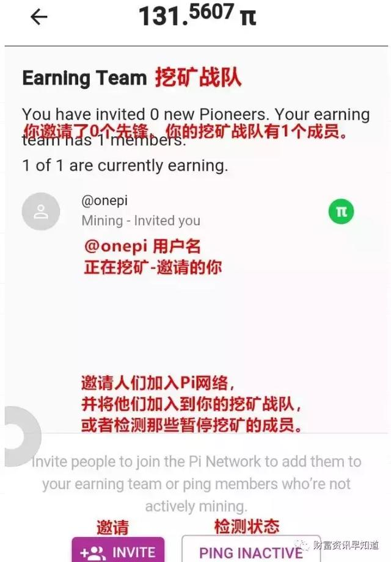

现在为大家翻译一下APP，和一些市面上翻译的中文结果有一点不同，因为英文翻译成中文有两种结果：
第一种是直译，就是按照中英文词典或者翻译软件提供的结果。
第二种是意译，就是按照语境情况翻译成适合当下场景或者中国区用户能够理解的意思。奇哥采用第二种翻译，可能更接地气一些，部分单词可能和用户看到的翻译软件的翻译结果略有不同。
①APP首页翻译
②左侧下拉菜单
③挖矿战队

④角色（安全圈）
⑤个人中心
Pi目前还没有中文版APP，只有一个英文版，但是群聊频道的语言种类已经40种了，全球主要语种国家的人都可以参与了，与聊天频道并没有按照国家来划分，而是按照沟通语种来进行的，说明Pi并不是以国家为单位，而是以人类沟通方式为单位，打破了国家边界，虽然生于美国，但是更加开放、更加自由。
这里是Pi network社区中文版，致力于提供Pi的最新消息和动态，
Pi假设在明年年底前达到以1000万名矿工结束挖矿，预期其总量在200-300亿枚区间，Pi的市值一定会超过瑞波而达到万亿美元市值，那么其价格在30-50美元。区块链1.0的BTC十年上涨了2000万倍，区块链2.0的ETH四年涨了4000倍，当然，长城不是一天可以建成的，一定要给Pi成长的时间。
Pi主网上线，将真正揭开区块链3.0的新篇章。
Pi在全球化道路上又迈了一 步！
Global Slogan：One Pi One World（一币一世界）
随着央妈要发行数字货币的新闻铺天盖地，席卷全球，区块链浪潮已经到来，如果你觉得此文对你了解区块链相关资讯有帮助，欢迎动动手指，点击关注此公众号，或者分享此文章到你的朋友圈，你的一个小小的举动，在未来可能会改变一个人的命运！天道酬勤，厚德载物！
上一篇：pi币app这个应用程序是钱包
下一篇：没有了